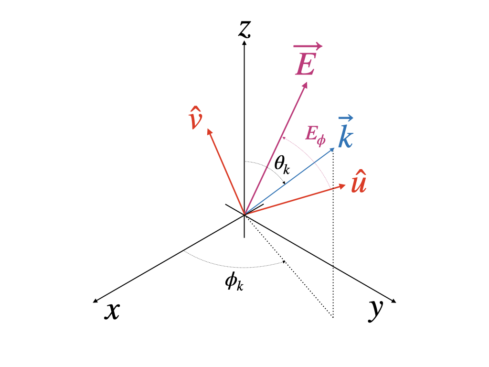

fields.py¶
- fields.electric_dipole(kFree, nref, θdip, φdip, η, pmag, ζCoords, ηCoords, fields='EH')[source]¶
This function returns the E and H fields produced by an electric dipole radiator at frequency \(ω = k_\text{Free} c\) in a given plane.
\[\begin{split}\begin{align} \vec{E} &= e^{ikr} \left(\frac{k^2}{r} (\hat{r}\times\vec{p})\times \hat{r} + \frac{\left(1-ikr\right)}{r^3}\left(3 \hat{r}(\hat{r}\cdot\vec{p}) - \vec{p}\right)\right) \\ \vec{H} &= -Z_n k^2 \frac{e^{ikr}}{r} \left(1 + \frac{i}{kr}\right) \left( \hat{r} \times \vec{p} \right) \\ Z_n &= \frac{1}{n} \\ \hat{r} &= \frac{\vec{r}}{r} \\ c &= 1 \\ k &= k_{free} n \end{align}\end{split}\]┌───────────────────────────────────────────────────────┐ │ │ │ ηCoords │ │ ┌─────────────┬─ │ │ ┌.┘ ┌─┘ │ │ ▲ ┌─┘│ ┌─┘ │ │ │┌─┘ ┌─┘ ζCoords │ │ ┌┼┘ │ ┌─┘ │ │ ─┴┼────────────┘ │ │ │ │ │ │ │ │ │ η │ │ │ │ │ │ │ │ │ │ │ θdip ┌▶ │ │ │ ┌─┘ │ │ │ │ ┌─┘ │p │ │ │ ┌─┘ │ │ │ │ ┌─┘ │ │ │ │ ┌─┘ │ │ ─ ─ ─ ─ ▼ ─ ──┼ ─ ─ ─ ─ ─│▶ y │ │ ┌ ┘ └ ┐ │ │ ─ │ ─ │ │ │ ┌ ┘ └ ┐ │ │ ─ φdip ─ │ │ │ x ┌ ┘ └ ─ │ │ ◀ │ │ │ │ └───────────────────────────────────────────────────────┘
Parameters¶
- kFreefloat
free-space wavenumber.
- nreffloat
refractive index of the medium.
- θdip, ϕdipfloat
dipole orientation angles.
- ηfloat
vertical distance between dipole and plane.
- pmagfloat
dipole moment magnitude.
- ζCoordsnp.array (N,)
x-coordinates of the target plane.
- ηCoordsnp.array
(N,) y-coordinates of the target plane.
- fieldstr
‘E’, ‘H’, or ‘EH’ for the field components to return.
Returns¶
- Efieldnp.array (3, N, N)
electric field at the given plane, with the first dimension indexing the x, y, and z components of the field.
- Hfieldnp.array (3, N, N)
H-field at the given plane, with the first dimension indexing the x, y, and z components of the field.
Reference¶
Jackson, David. Classical Electrodynamics, 1999, equation 9.18.
- fields.magnetic_dipole(kFree, nref, θdip, φdip, η, mmag, ζCoords, ηCoords, fields='EH')[source]¶
This function returns the E and H fields produced by a magnetic dipole radiator at frequency \(ω = k_\text{Free} c\) in a given plane.
Assuming this specific form of Maxwell’s Equations the fields for a magnetic dipole radiator are given by.
\[\begin{split}\begin{align} \vec{H} &= e^{ikr} \left(\frac{k^2}{r} (\hat{r}\times\vec{m})\times \hat{r} + \frac{\left(1-ikr\right)}{r^3}\left(3 \hat{r}(\hat{r}\cdot\vec{m}) - \vec{m}\right)\right) \\ \vec{E} &= -Z_n k^2 \frac{e^{ikr}}{r} \left(1 + \frac{i}{kr}\right) \left( \hat{r} \times \vec{m} \right) \\ Z_n &= \frac{1}{n} \\ \hat{r} &= \frac{\vec{r}}{r} \\ c &= 1 \\ k &= k_{free} n \end{align}\end{split}\]┌───────────────────────────────────────────────────────┐ │ │ │ ηCoords │ │ ┌─────────────┬─ │ │ ┌.┘ ┌─┘ │ │ ▲ ┌─┘│ ┌─┘ │ │ │┌─┘ ┌─┘ ζCoords │ │ ┌┼┘ │ ┌─┘ │ │ ─┴┼────────────┘ │ │ │ │ │ │ │ │ │ η │ │ │ │ │ │ │ │ │ │ │ θdip ┌▶ │ │ │ ┌─┘ │ │ │ │ ┌─┘ │p │ │ │ ┌─┘ │ │ │ │ ┌─┘ │ │ │ │ ┌─┘ │ │ ─ ─ ─ ─ ▼ ─ ──┼ ─ ─ ─ ─ ─│▶ y │ │ ┌ ┘ └ ┐ │ │ ─ │ ─ │ │ │ ┌ ┘ └ ┐ │ │ ─ φdip ─ │ │ │ x ┌ ┘ └ ─ │ │ ◀ │ │ │ │ └───────────────────────────────────────────────────────┘
Parameters¶
- kFree(float)
free-space wavenumber.
- nreffloat
refractive index of the medium.
- θdip, ϕdipfloat
dipole orientation angles.
- ηfloat
vertical distance between dipole and plane.
- mmagfloat
dipole moment magnitude.
- ζCoordsnp.array (N,)
x-coordinates of the target plane.
- ηCoordsnp.array (N,)
y-coordinates of the target plane.
- fieldstr:
‘E’, ‘H’, or ‘EH’ for the field components to return.
Returns¶
- Efieldnp.array (3, N, N)
electric field at the given plane, with the first dimension indexing the x, y, and z components of the field.
- Hfieldnp.array (3, N, N)
H-field at the given plane, with the first dimension indexing the x, y, and z components of the field.
Reference¶
Jackson, David. Classical Electrodynamics, 1999, equation 9.35.
- fields.plane_wave(kFree, nref, θk, φk, η, Eamp, Eφ, xCoords, yCoords, fields='EH')[source]¶
This function returns the E and H fields produced by a plane wave at a given plane. The direction of the polarization of the electric field is given by the angle Eϕ, which is the counter-clockwise angle between a unit vector that is perpendicular to the direction of propagation and lying on the x-y plane. The direction of the propagation is given by θk and ϕk. The complex amplitude of the electric field is given by Eamp.
Parameters¶
- kFreefloat
free-space wavenumber.
- nreffloat
refractive index of the medium.
- θk, ϕkfloat
direction of propagation.
- ηfloat
fields are returned at the plane z=η.
- Eampfloat
amplitude of the electric field.
- Eϕfloat
angle of the electric field polarization.
- xCoordsnp.array (N,)
x-coordinates of the target plane.
- yCoordsnp.array (N,)
y-coordinates of the target plane.
- fieldstr
‘E’, ‘H’, or ‘EH’ for the field components to return.
Returns¶
- Efieldnp.array (3, N, N)
electric field at the given plane, with the first dimension indexing the x, y, and z components of the field.
- Hfieldnp.array (3, N, N)
H-field at the given plane, with the first dimension indexing the x, y, and z components of the field.